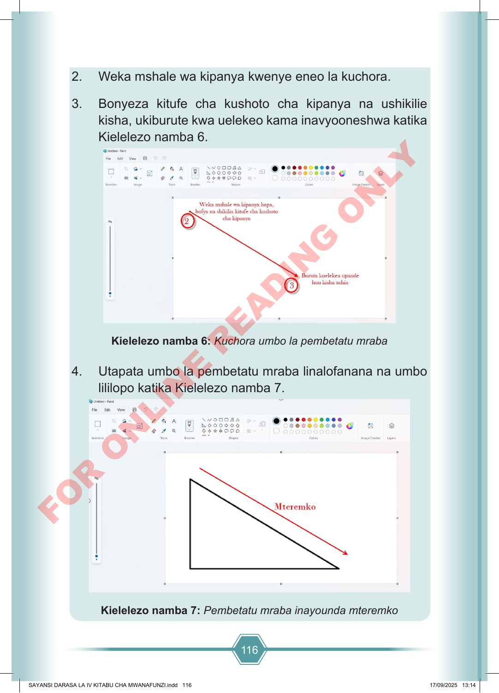

116 2. Weka mshale wa kipanya kwenye eneo la kuchora. 3. Bonyeza kitufe cha kushoto cha kipanya na ushikilie kisha, ukiburute kwa uelekeo kama inavyooneshwa katika Kielelezo namba 6. Kielelezo namba 6: Kuchora umbo la pembetatu mraba 4. Utapata umbo la pembetatu mraba linalofanana na umbo lililopo katika Kielelezo namba 7. Kielelezo namba 7: Pembetatu mraba inayounda mteremko SAYANSI DARASA LA IV KITABU CHA MWANAFUNZI.indd 116 SAYANSI DARASA LA IV KITABU CHA MWANAFUNZI.indd 116 17/09/2025 13:14 17/09/2025 13:14 F O R O N L I N E R E A D I N G O N L Y
2. Weka mshale wa kipanya kwenye eneo la kuchora. 3. Bonyeza kitufe cha kushoto cha kipanya na ushikilie kisha, ukiburute kwa uelekeo kama inavyooneshwa katika Kielelezo namba 6. Kielelezo namba sita: Kuchora umbo la pembetatu mraba 4. Utapata umbo la pembetatu mraba linalofanana na umbo lililopo katika Kielelezo namba 7. Kielelezo namba saba: Pembetatu mraba inayounda mteremko
Dokezo la ufikivu: mwanafunzi anayetumia kibodi au kisoma skrini anaweza kutumia Quorum kama programu fikivu mbadala, akiongozwa na mwalimu au mwezeshaji.
Maelezo fikivu ya Kielelezo namba 6: Mshale wa kipanya unawekwa katika eneo la kuchora, kisha unaburutwa kuelekea upande mwingine ili kuunda pembetatu mraba.
Maelezo fikivu ya Kielelezo namba 7: Pembetatu mraba ina upande mmoja wa mteremko uliooneshwa kwa mshale mwekundu.
Maelezo fikivu ya kielelezo: kielelezo kinaonesha au kinabainisha jambo linalozungumziwa. Chunguza kwa kuona, kusikiliza maelezo, kugusa au kuhisi kwa kutumia njia inayokufaa.